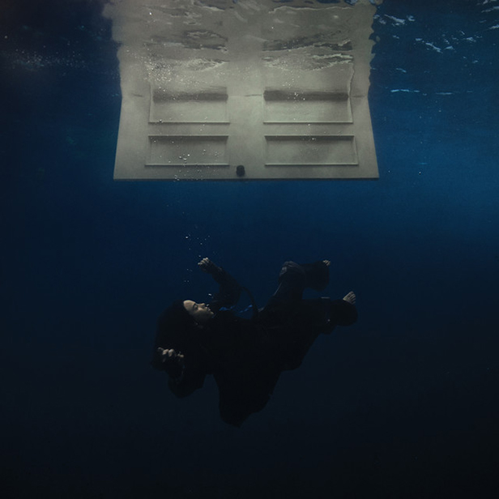
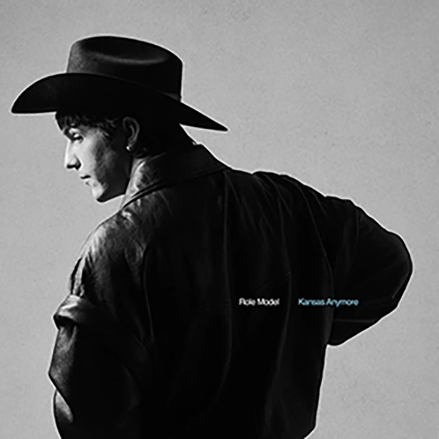

Here are my top 5 favorite music artists!
I love music, and always have my headphones on. These music artists are the most important to me & their music makes me feel safe and comforted.
Harry Styles

Harry Styles has a unique style and isn't afraid express himself despite being in the public eye. He also promotes kindness, and his songs and interviews are something I listen to and watch when I get overwhelmed and need a reminder that everything will be okay
One Direction
I immediately fell in love with one direction and their music early on throughout my childhood, and love them all as solo artists as well. I made an editing account for harry in 2021, and met my best friend on it, and we've been best friends since 2022. in 2024, I got to meet her in person which was a dream come true. she's one of my favorite people and knows me the best out of everyone so one of the things that brought us together and is somnething we bond over is our love for this band.
Billie Eilish
I recently got to see billie in concert with my best friend in 2024 and was immediately captivated by her style and the way she carries herself with such confidence, still promoting kindness but sticking to her beliefs and wearing what she wants regardless of what people say.
Daniel Seavey

I found out about Daniel and his music through an online friend of mine, and was immediately captivated by his compassion to connect to his fans and express his experiences through his music.
Role Model
Role Model's music is both expressive of ups and downs in a relationship, and he emphasizes these feelings in his most recent album, Kansas Anymore. Written about his vulnerability in his most recent relationship coming to an end, Tucker emphasizes that he still cares and adores his ex girlfriend despite how the relationship might've ended, and shows nothing but passion all throughout his songs. My favorite songs of his are superglue, blind, and sally, when the wine runs out.
Here are my top 5 favorite songs!
Satellite from Harry's House
It's Not Living (If It's Not With You) by The 1975
Cherry Flavored by The Neighbourhood
Save My Life by Niall Horan
Apple Cider by Beabadoobee